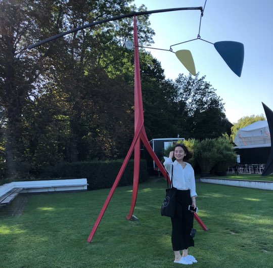
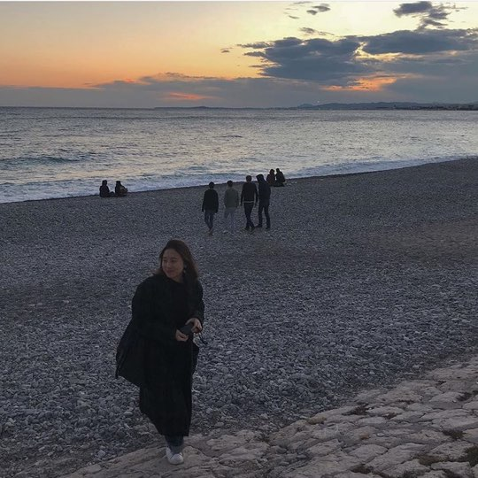
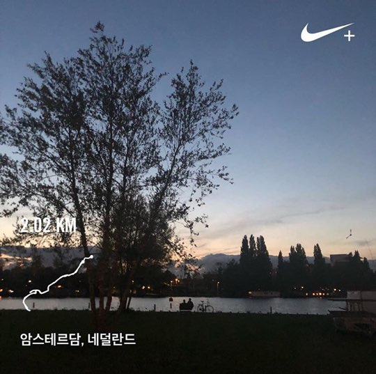

WHO AM I?
저는 미디어학부에 다니고 있는 16학번 박주혜에요!
이과 공부를 하고 싶어서 뇌인지과학 융합전공을 함께하고 있어요!
허허 왜 그런 생각을 했었을까요 ㅎㅎ
지금은 학교 최고참인 5학년이구요!
나이는 아직은… 젊다고 믿고 싶은 24살입니다 ㅎㅎ
저는 여러 분야에 관심이 많은 편인 것 같아요!!
.
.
멋사에 들어오기 전에는 고대신문에서 신문을 만들고,
서울시 산하 비영리 단체에서 시각장애인들을 위한 전시도 열었어요!
파이빌에서 '시옷비읍'이라는 팀이름으로 '성북구의 핫플레이스'도 소개하구,
다음소프트라는 회사에서 소셜데이터를 보고 분석하는 작업도 했었답니다.
.
.
재미없는 이야기는 던져버리고
제 인스타 피드에 있는 사진으로
공식적이지 않은 제 모습 몇 가지를 소개해볼게요!
인스타그램 사진들
저는 미술관 가는 걸 좋아해요!
그리고 여행 가는 걸 좋아합니다!
니스 바다를 갔었는데 정말 예뻤어요!
마지막으로 교환학생 시절부터
러닝을 시작한 러닝 초보입니다!
혹시 관심 있는 분 있으면 같이 뛰어요!



니스 바다를 갔었는데 정말 예뻤어요!
러닝을 시작한 러닝 초보입니다!